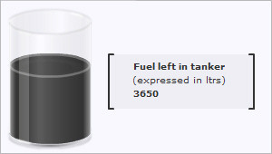

Annotations let you create your own custom objects (shapes, images, text etc.) in the charts. You can create various shapes like polygons, rectangles, circles, arcs, etc., render annotation text at required positions and load external GIF/JPEG/PNG images or other Flash movies in the chart itself.
The main features of annotations are:
- Rendering of lines, rectangle, circle, arc or any polygon at any position on the chart
- Gradient fill support
- Support for loading of external image files (.gif, .jpeg, .png and .swf) and dynamically scaling them after loading
- Rendering of text, with customizable properties, at any position on the chart
- Ability to manipulate the layer depth of various objects and to control whether the individual objects will be shown above the chart or below it
- Option to add tool text for each annotation group
- Ability to link each annotation group to an external URL
- Can be linked with styles to apply effects and animation
- Applicable for all the gauges and charts present in FusionWidgets XT pack
Shown below are a few samples where we've applied annotation over charts:
 |
 |
The circles below the gauge
have been created using annotations. |
The content box and the text in it
have been created using annotations. |
<chart manageResize="1" origW="270" origH="270" bgColor="333333" bgAlpha="100" gaugeStartAngle="90" gaugeEndAngle="-270" lowerLimit="0" upperLimit="12" lowerLimitDisplay=" " upperLimitDisplay="12" majorTMNumber="12" majorTMThickness="3" majorTMColor="FFFFFF" majorTMHeight="7" minorTMNumber="4" minorTMColor="FFFFFF" minorTMHeight="4" placeValuesInside="1" tickValueStep="3" tickValueDistance="20" gaugeOuterRadius="95" gaugeInnerRadius="95" showShadow="0" pivotRadius="6" pivotFillColor="FFFFFF" annRenderDelay="0">
<dials>
<dial value="5" color="FFFFFF" baseWidth="3" topWidth="1" radius="70" rearExtension="12"/>
</dials>
<annotations>
<!--circles behind the gauge-->
<annotationGroup id="Grp1" showBelow="1" x="135" y="135">
<annotation type="circle" x="0" y="0" color="EBF0F4,85898C,484C4F,C5C6C8" fillRatio="30,30,30,10" fillAngle="270" radius="120" fillPattern="linear"/>
<annotation type="circle" x="0" y="0" color="8E8E8E,83878A,E7E7E7" fillAngle="270" radius="105" fillPattern="linear"/>
<annotation type="circle" x="0" y="0" color="07476D,19669E,186AA6,D2EAF6" fillRatio="5,45,40,10" fillAngle="270" radius="103" fillPattern="linear"/>
<annotation type="circle" x="0" y="0" color="07476D,19669E,07476D" fillRatio="5,90,5" fillAngle="270" radius="100" fillPattern="linear"/>
</annotationGroup>
<!--Circle behind the pivot-->
<annotationGroup id="Grp2" showBelow="1" x="135" y="135">
<annotation type="circle" x="0" y="0" radius="12" color="012A46"/>
</annotationGroup>
</annotations>
<styles>
<definition>
<style name="TTipFont" type="font" color="FFFFFF" bgColor="706C11" borderColor="706C11" font="Verdana" size="10"/>
<style name="ValueFont" font="Times New Roman" italic="1" type="font" size="18" color="FFFFFF" bold="1"/>
</definition>
<application>
<apply toObject="TOOLTIP" styles="TTipFont"/>
<apply toObject="TICKVALUES" styles="ValueFont"/>
<apply toObject="LIMITVALUES" styles="ValueFont"/>
</application>
</styles>
</chart>
{
"chart": {
"manageResize": "1",
"origW": "270",
"origH": "270",
"bgcolor": "333333",
"bgalpha": "100",
"gaugestartangle": "90",
"gaugeendangle": "-270",
"lowerlimit": "0",
"upperlimit": "12",
"lowerlimitdisplay": " ",
"upperlimitdisplay": "12",
"majortmnumber": "12",
"majortmthickness": "3",
"majortmcolor": "FFFFFF",
"majortmheight": "7",
"minortmnumber": "4",
"minortmcolor": "FFFFFF",
"minortmheight": "4",
"placevaluesinside": "1",
"tickvaluestep": "3",
"tickvaluedistance": "20",
"gaugeouterradius": "95",
"gaugeinnerradius": "95",
"showshadow": "0",
"pivotradius": "6",
"pivotfillcolor": "FFFFFF",
"annrenderdelay": "0"
},
"dials": {
"dial": [
{
"value": "5",
"color": "FFFFFF",
"basewidth": "3",
"topwidth": "1",
"radius": "70",
"rearextension": "12"
}
]
},
"annotations": {
"groups": [
{
"id": "Grp1",
"x": "135",
"y": "135",
"showbelow": "1",
"items": [
{
"type": "circle",
"x": "0",
"y": "0",
"color": "EBF0F4,85898C,484C4F,C5C6C8",
"fillratio": "30,30,30,10",
"fillangle": "270",
"radius": "120",
"fillpattern": "linear"
},
{
"type": "circle",
"x": "0",
"y": "0",
"color": "8E8E8E,83878A,E7E7E7",
"fillangle": "270",
"radius": "105",
"fillpattern": "linear"
},
{
"type": "circle",
"x": "0",
"y": "0",
"color": "07476D,19669E,186AA6,D2EAF6",
"fillratio": "5,45,40,10",
"fillangle": "270",
"radius": "103",
"fillpattern": "linear"
},
{
"type": "circle",
"x": "0",
"y": "0",
"color": "07476D,19669E,07476D",
"fillratio": "5,90,5",
"fillangle": "270",
"radius": "100",
"fillpattern": "linear"
}
]
},
{
"id": "Grp2",
"x": "135",
"y": "135",
"showbelow": "1",
"items": [
{
"type": "circle",
"x": "0",
"y": "0",
"radius": "12",
"color": "012A46"
}
]
}
]
},
"styles": {
"definition": [
{
"name": "TTipFont",
"type": "font",
"color": "FFFFFF",
"bgcolor": "706C11",
"bordercolor": "706C11",
"font": "Verdana",
"size": "10"
},
{
"name": "ValueFont",
"font": "Times New Roman",
"italic": "1",
"type": "font",
"size": "18",
"color": "FFFFFF",
"bold": "1"
}
],
"application": [
{
"toobject": "TOOLTIP",
"styles": "TTipFont"
},
{
"toobject": "TICKVALUES",
"styles": "ValueFont"
},
{
"toobject": "LIMITVALUES",
"styles": "ValueFont"
}
]
}
}
The <annotations> element signifies the start of annotations in the data. All the code to generate the annotations is enclosed within the <annotations> element in XML.
Each annotation has to be placed within one annotation group or the other. An annotation group is created using the <annotationGroup> element in XML. Each annotation group necessarily has to have a unique ID. This ID comes into use when you are using styles, Alert manager or JavaScript API.
Individual annotation objects (line, circle, rectangle, arc, polygon, image and text) can be placed within the annotation group using the <annotation> element in XML. Each annotation element has some essential properties like type, x, y etc. and lots of other cosmetic and functional properties.
The basic XML/JSON structure to define annotations is as follows:
<chart ...>
...
<annotations>
<!-- Annotation Group 1 -->
<annotationGroup id="Grp1" >
<!-- Annotation Objects for Grp1 -->
<annotation type="line" x="135" y="135" toX="135" toY="170" color="FF0000" />
<annotation type="rectangle" x="50" y="50" toX="100" toY="100" color="8E8E8E" />
...
</annotationGroup>
<!--Annotation Group 2 -->
<annotationGroup id="Grp2">
<!--Annotation Objects for Grp2 -->
<annotation type="circle" x="135" y="135" radius="12" color="012A46" />
...
</annotationGroup>
</annotations>
</chart>
{
"chart": { ... },
"annotations": {
/* groups Array containing Annotation Group - each item is an Object referring to an Annotation Group */
"groups": [
/* Annotation Group 1 */
{
/* ID of Annotation Group 1 */
"id": "Grp1",
/* Collection of Annotataion objects for Grp1 in items Array */
"items": [
{ "type": "line", "x": "135", "y": "135", "toX" : "135", "toY" : "170", "color": "FF0000" },
{ "type": "rectangle", "x": "50", "y": "50", "toX" : "100", "toY" : "100", "color": "8E8E8E" },
...
]
},
/* Annotation Group 2 */
{
/* ID of Annotation Group 2 */
"id": "Grp2",
/* Collection of Annotataion objects for Grp2 in items Array */
"items": [
{ "type": "circle", "x": "135", "y": "135", "radius": "12", "color": "012A46" },
...
]
}
]
}
...
}
Let's take a look at each of these elements in greater detail now.
<annotationGroup> elements are used to consolidate a number of annotations under one group. For example, say that you've created your company logo using custom objects and you want the logo to be present on all the charts (on the top left corner). Now, your company logo consists of two polygons, one rectangle, three lines and two textboxes. So, you can group all of these individual annotations under an <annotationGroup>, so that whenever you need to re-position the logo on the chart or scale it, you can directly assign the new position to the annotation group itself, instead of applying the same to all the annotations within.
Also, if you need to show an annotation below the chart, you can set the layering depth of the same using annotation group only. For example, you've created a textured background using annotations and now you want all your charts to have that textured background. However, by default if you just place it within an annotation group, the background will appear over the chart. With the showBelow property of the annotationGroup element, you can configure to show the entire annotation group below the chart.
In an annotation group, the annotation which has been defined first will appear at the bottom-most position within that respective group and the one which has been defined last will appear at the top-most. If the chart contains more than one annotation group, then the stacking order of various annotation groups is also determined similarly.
Let's study the attributes supported by <annotationGroup> element in detail:
| Attribute name | Type/Range | Description |
| id | String | The ID of the annotation group. Each annotation group needs to have a unique ID. This allows the group to be referred using: Styles, Alert Manager and JavaScript API. Read more » |
| x | Number | The x co-ordinate of the annotation group. All the annotations in this group will start drawing from this x co-ordinate + the x co-ordinate of the annotation itself (if defined). Thus, when you have to re-position a group of annotations, let's say the company logo we talked about earlier, then instead of re-positioning each and every annotation in the company logo, we can re-position the entire annotation group itself using this attribute. Whenever, you have to use x-scaling or y-scaling for annotations, you should place the annotation at (0,0) within that annotation group, then x-scale the annotation as per requirement and then position the annotation group to where the annotation was supposed to be. This is required because if we had instead placed the annotation at the required position and then x-scaled it, then the distance from the starting position of the annotation group to the starting position of the annotation will also be x-scaled and hence the annotation won't end up at the required x position. |
| y | Number | Just like x sets the x position of the object group, this attribute sets the y position of the object group. |
| alpha | Number | This attribute helps you set the alpha of all the objects in an object group by specifying at just one place - the object group. |
| origW | Number | This attribute helps you define the original width of the chart - the width of the chart when you had first created the annotations. So when you change the chart size later and want the annotations in the annotation group to be scaled accordingly, you can use the dynamic resizing feature which in turn uses the origW attribute. So suppose when you are creating the annotation, the width of the chart is 300 and then later you change the width of the chart to 600 and want the annotations to be doubled in width, then you can use the dynamic resizing feature and specify origW='300'. It will automatically check the current width and scale the annotations appropriately. Please note that both the original width and height of the chart need to be set. Read the Dynamic Resizing page to know more. |
| origH | Number | Similar to origW attribute, it helps you specify the original height of the chart. Read the Dynamic Resizing page to know more. |
| autoScale | 0/1 | Allows you to scale the annotation group taking into account the change in width and height of the chart. The scaling is constrained by default. |
| constrainedScale | 0/1 | Whether to use constrained scaling or not. If the width and height of the chart have changed by different values and you use the dynamic resizing feature, then the annotation will have constrained scaling by default, i.e. the dimensions of the annotation will change such that the shape of the annotation doesn't become distorted. But if you wish to have unconstrained scaling which might result in the annotation becoming distorted in shape, then you can set this attribute to 0.
Unconstrained scaling is not applicable for the circle, arc and polygon shapes when manageResize='1' is set in the <chart> element. |
| scaleImages | 0/1 | Whether the images in the annotation group (if any) also have to be scaled while using the dynamic resizing feature. |
| scaleText | 0/1 | Whether the text in the annotation group (if any) also have to be scaled while using the dynamic resizing feature. |
| xShift | Number (both positive and negative) | If you need to shift the annotation group to the left or right, you can do the same using this attribute. |
| yShift | Number (both positive and negative) | If you need to shift the annotation group above or below, you can do the same using this attribute. |
| showBelow | 0/1 | Whether the annotation group will be shown above the chart or below it? |
| visible | 0/1 | Whether the annotation group will be visible on the chart or not? |
| toolText | String | This attribute allows you to define the tool-text for all the annotations in the annotation group. |
| link | FusionCharts Link Format | This attribute sets up a link to the given URL for all the annotations in the annotation group. For more on various types of links supported, see the Drill-Down Charts section. |
| xScale | Number | This attribute helps you increase the width % of the custom object group. Say, you had your logo drawn using custom objects and now you want to double its size. Doubling means increasing the width and height of the object group to 200%. So, this attribute helps you increase the width - you can set it as 200 to double the width of the logo. |
| yScale | Number | Just like xScale helps you set the width %, this attribute helps you set the height %. |
You can have as many numbers of annotation groups as you want - however, it is wise to group related annotations under one group, rather than creating groups at random.
Now that you're clear with annotation groups, let's have a look at the main element of annotations - the <annotation> element.
Each <annotation> element helps you specify an annotation for the chart. And for each annotation, there are a lot of properties which you can define using the attributes of this element. The most important attribute of this element is type, which helps you define what kind of annotation needs to be drawn. Example:
<annotation type='line' .... />
The type attribute of the <annotation> element can take the following values:
Pretty self explanatory - each of these types of annotation helps you create that shape on the chart.
Every annotation needs a few other parameters to function properly. Like the rectangle needs to know where to start from and where to end. Also, it needs the cosmetic properties like border color, fill color etc. It's not necessary to define all the properties, as FusionWidgets will take the default value for all those attributes whose value you've not specified.
Let's now delve into the attributes for each annotation type that can help you control the annotation better.